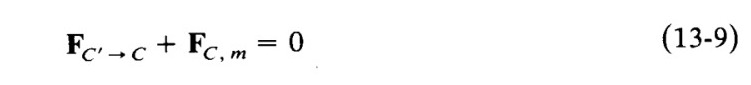
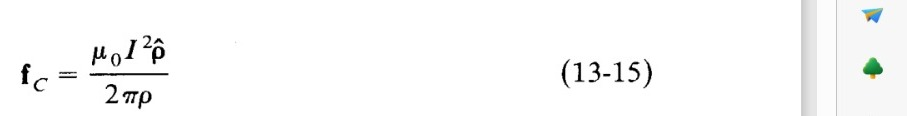
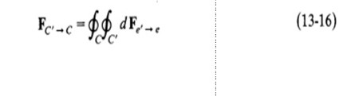
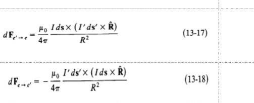
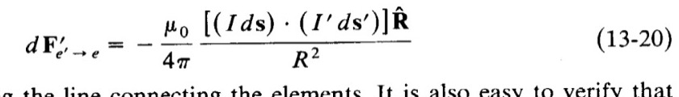

MEDAN ELEKTROMAHNETIK
"
KELOMPOK 11
1. MADE JAYA SETIAWAN (2117041004)
2. Monica Putri Apriliani (2117041033)
"
KELOMPOK 11
1. MADE JAYA SETIAWAN (2117041004)
2. Monica Putri Apriliani (2117041033)
André-Marie Ampère (1775-1836) adalah seorang fisikawan, matematikawan, dan ahli kimia Prancis yang terkenal karena karyanya di bidang elektromagnetisme dan elektrodinamika. Ampère lahir di Lyon, Prancis, pada tanggal 20 Januari 1775. Ayahnya adalah seorang pedagang bahan tekstil, dan keluarga Ampère tergolong kaya dan terhormat di kota Lyon.
Hukum Ampere, juga dikenal sebagai Hukum Ampere-Maxwell, adalah salah satu hukum dasar dalam fisika listrik dan magnetisme. Hukum ini menyatakan bahwa medan magnet yang dihasilkan oleh aliran listrik dalam sebuah penghantar sebanding dengan besar arus yang mengalir melaluinya.
Hukum Ampere memiliki banyak aplikasi dalam fisika dan teknik, seperti dalam pembuatan elektromagnet, pengukuran arus listrik, dan pemahaman tentang fenomena elektromagnetik di alam semesta.
The Force Between Two Complete Circuits adalah sebuah fenomena dalam fisika listrik dan magnetisme di mana terjadi gaya tarik-menarik antara dua kawat penghantar yang membentuk lingkaran atau sirkuit tertutup ketika arus listrik mengalir melalui kawat-kawat tersebut. Fenomena ini berdasarkan pada hukum elektromagnetisme, khususnya hukum Ampere, yang menyatakan bahwa arus listrik yang mengalir melalui penghantar akan menghasilkan medan magnet di sekitarnya. Gaya tarik-menarik yang terjadi antara dua kawat penghantar ini bergantung pada besar arus listrik yang mengalir melalui kawat-kawat tersebut, jarak antara kedua kawat, dan bentuk sirkuit dari kedua kawat. Fenomena ini memiliki banyak aplikasi dalam teknologi, seperti pada motor listrik dan generator.
Konsep dua arus paralel panjang tak terbatas dalam hukum Ampere mengatakan bahwa arus yang mengalir pada dua kawat konduktor yang sejajar, panjangnya tak terbatas, dan arus yang mengalir berarah searah akan saling menarik, sedangkan arus yang berlawanan arah akan saling tolak. Hukum Ampere menyatakan bahwa medan magnet yang dihasilkan oleh arus listrik yang mengalir pada konduktor berbentuk lingkaran yang mengelilingi konduktor. Jumlah medan magnet ini sebanding dengan arus listrik dan sebaliknya sebanding dengan jarak dari konduktor.
Meskipun seringkali tidak bijaksana untuk menarik kesimpulan tentang integral dari sifat dan nilai integral tertentu, kita telah melakukannya sebelumnya, misalnya dalam memperoleh (7-29), dan kita akan melakukannya lagi. Bentuk (13-1) sedemikian sehingga dapat ditulis sebagai
 Dimana R = r-r' tetap. Jika kita menambahkan (13-17) dan (13-18). Kita temukan dengan menggunakan (1-30), yaitu
yang umumnya berbeda dari nol, berbeda dengan (13-8). Jumlah ini akan menjadi nol hanya jika ds' dan ds sejajar seperti pada Gambar 13-2, atau jika R(topi) tegak lurus terhadap bidang yang dibentuk oleh ds' dan ds. Jika kita melakukan hal yang sama dengan bentuk kita yang lebih simetris (13-6), kita akan diam bentuk lain yang mungkin untuk gaya antara elemen saat ini, yaitu
